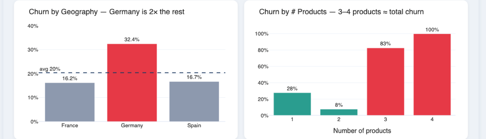
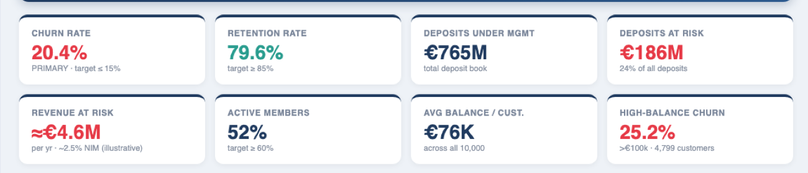

Case study · Retention
Bank Customer Churn
20.4% churn, and €186M of deposits behind it.
- Scale
- 10,000 customers · France, Germany, Spain
- Role
- Sole analyst — raw extract to dashboard
Context
A retail bank with a €765M deposit book across France, Germany and Spain wants to know how much of it is at risk, and where a retention budget should go first.
Churn normally gets reported as a percentage of customers. That’s the wrong unit here. A bank loses deposits, not headcount, and the customers most likely to leave don’t hold average balances. The useful question is how much money sits behind the churn rate, and where it’s concentrated.
The data
A public dataset of 10,000 retail-banking customers across three markets. One row per customer: balance, tenure, number of products held, an activity flag, and whether they left.
At 20.4% churn the majority class is 79.6%, so any rule or model has to beat a do-nothing baseline of 79.6% accuracy before it’s worth anything. Worth remembering the next time someone presents an 80%-accurate churn model.
Approach
I ran the analysis in euros of deposit rather than customer counts, then cut it by the things a retention team can actually act on: market, products held, balance band and activity. Two of those cuts did the work.

Germany churns at 32.4%, against 16.2% in France and 16.7% in Spain. Roughly double the rest, on a similar customer base. That reads as something specific to that market, operational or competitive, rather than as a general retention problem.
Products held run the other way, and harder. Churn is 28% at one product, drops to 8% at two, then jumps to 83% at three and 100% at four. If the line went one way you’d get the familiar “more products, more sticky”. It doesn’t, so two products looks like the healthy state and anything above it is a signal of something else going on.
Why segmentation and not a churn model. A logistic regression would give a probability per customer and wouldn’t have taken long to fit. But the decision here is where to point a budget, not who to call first, and the model would still have had to clear that 79.6% baseline to earn its place.
Result

20.4% churn, €186M of deposits at risk — 24% of a €765M book — and roughly €4.6M of annual revenue behind it.
The concentration is what makes it actionable. The 4,799 customers holding more than €100,000 churn at 25.2%, above the 20.4% average, so the deposit book leaks faster than the customer count suggests. A retention effort aimed at Germany and at three- and four-product holders reaches more of the money than of the people.
On this evidence I’d start there rather than with a broad campaign: Germany first, then a review of what’s happening to customers who end up holding three or more products, since that group churns almost completely.
What this can’t show. The €4.6M revenue figure applies an illustrative 2.5% net interest margin. It gives a sense of scale; it isn’t the bank’s real margin. The three- and four-product groups are also much smaller than the rest, so 83% and 100% are directional. And this is a snapshot: it records who churned, not when, so it can’t support any time-to-churn or survival claim.